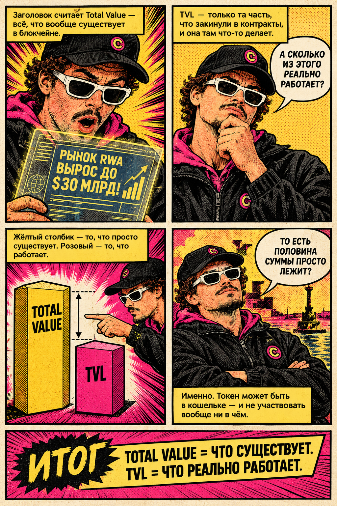
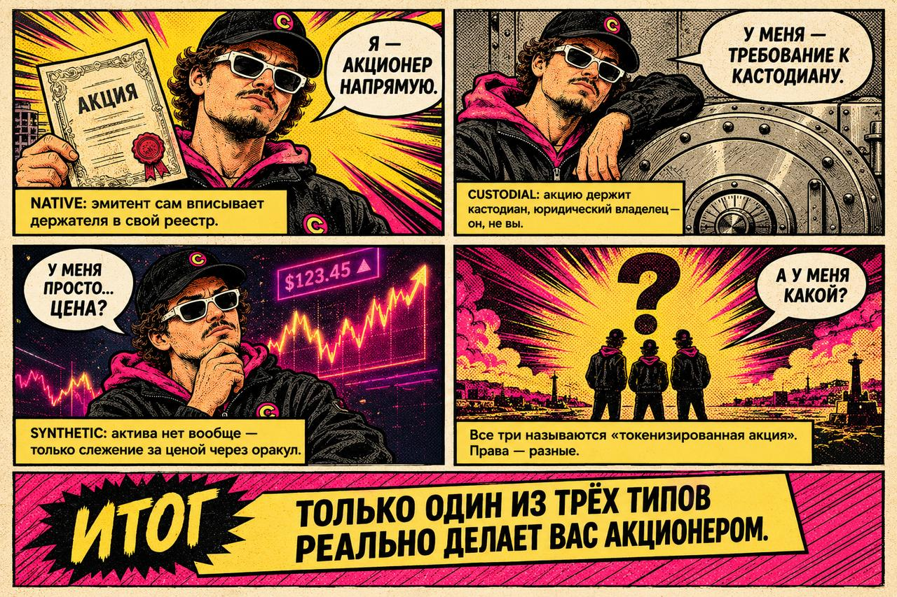
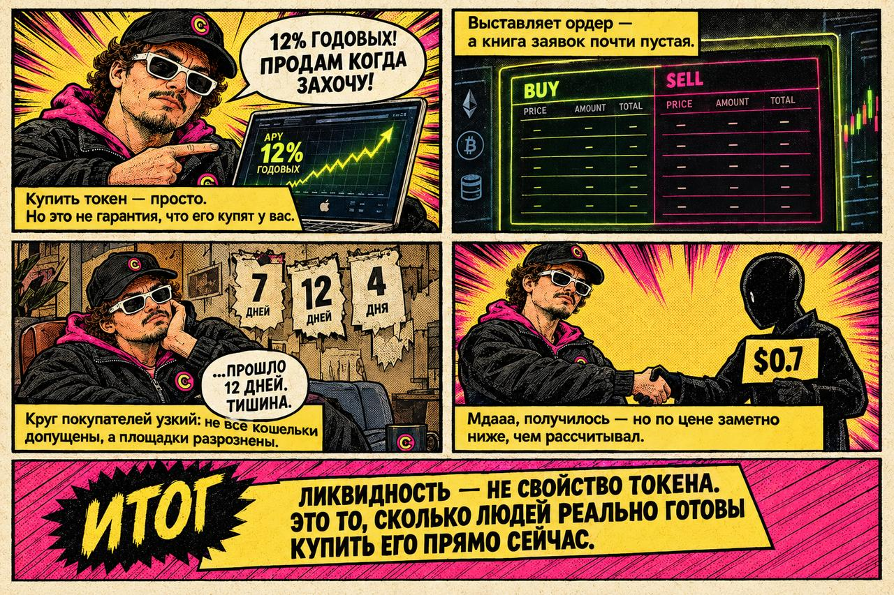
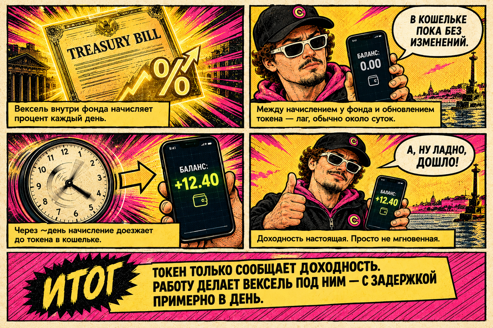
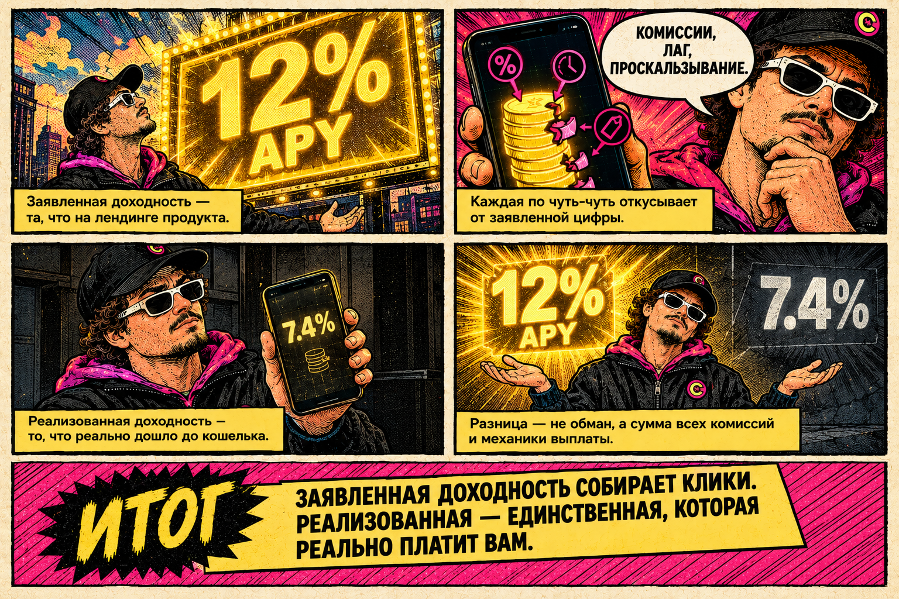
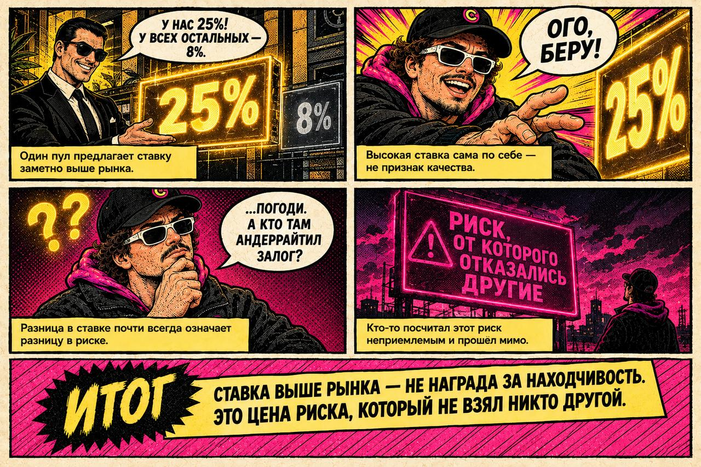

31 понятие — от «что такое RWA» до механики дробного владения недвижимостью. После каждого раздела — комикс, который закрепляет самую скользкую мысль раздела. Читай в любом порядке — термины связаны между собой.
Раздел 01
Основы
Термин 01
RWA — реальный актив
Актив живёт не в блокчейне. В блокчейне живёт право на него.
RWA — это актив, у которого есть дом за пределами сети: облигация, кредитный портфель, склад, слиток золота. На него выпускают токен, и этот токен — не сам актив, а расписка, которая даёт право его потребовать. Расписка перемещается со скоростью интернета. Актив внизу — нет: здание не переезжает, когда токен на него меняет владельца, меняется только запись о том, кому теперь принадлежит право.
ГЛАВНОЕ
Токенизация не трогает цену актива. Она трогает то, кто может его держать и как быстро это можно передать дальше.
Термин 02
Токенизация
Актив остаётся собой. Меняется труба, по которой он ходит.
Токенизировать — значит взять существующий актив, например корпоративную облигацию или долю в фонде недвижимости, и выпустить на неё цифровое право требования. В самом активе ничего не перестраивается: у облигации тот же эмитент и тот же купон. Перестраивается способ, которым право переходит из рук в руки: расчёт занимает минуты вместо дней, торги идут не по расписанию биржи, а когда угодно, а дробить актив можно куда мельче исходного лота.
ГЛАВНОЕ
RWA — всё ещё тот же актив, что был до токенизации. Меняется логистика владения, а не то, чем вы владеете.
Термин 03
Ончейн
Не актив переезжает в блокчейн. Переезжает запись о том, кто им владеет.
«Ончейн» отвечает всего на один вопрос: где лежит реестр. Не во внутренней базе брокера, которую видно только по звонку, а в блокчейне, который вправе проверить кто угодно. Дом, стоящий за токеном, физически никуда не движется — двигается запись о праве требования на него. Отсюда разница на практике: расчёт занимает минуты, идёт круглые сутки, и его можно перепроверить независимо, не полагаясь на слово эмитента.
ГЛАВНОЕ
Ончейн не улучшает сам актив. Он усложняет подделку записи о том, кому актив принадлежит.
Термин 04
Кастоди
Токен настолько надёжен, насколько надёжен тот, кто держит актив за ним.
Рано или поздно у любого RWA-проекта возникает один и тот же вопрос: а кто физически держит то, на что я купил право? Токенизация создаёт расписку, блокчейн делает её удобной для учёта, а кастоди — отдельный слой поверх обоих: договорённость о том, кто хранит настоящую облигацию или слиток, и что произойдёт с активом, если платформа однажды закроется.
ГЛАВНОЕ
Слабый кастодиан превращает токен из права собственности в судебный иск. Сначала узнайте, кто держит физический актив.
Термин 05
Трансфер-агент
Блокчейн решает, что сделка прошла быстро. Закон решает, прошла ли она вообще.
Трансфер-агент — регистратор, о котором вспоминают только когда что-то идёт не так. Кастодиан подтверждает, что актив существует. Трансфер-агент решает другое: кому вообще разрешено держать токен, который на этот актив ссылается. Каждый перевод проходит проверку на комплаенс, статус инвестора и юрисдикцию — и только потом считается состоявшимся.
ГЛАВНОЕ
Скорость перевода токена и его юридическая сила — разные вещи. Быстро не значит действительно.
Термин 06
Total Value против TVL
Эти две цифры путают в каждом втором отчёте — а разница на порядок.
Total Value — сумма всех токенизированных активов, которые вообще существуют ончейн: в кошельке инвестора, в кастоди, где угодно. TVL — величина куда более узкая: сколько стоимости реально закинули в смарт-контракты, и она там что-то делает — фондирует пул, обеспечивает заём. Токенизированный трежери, который просто лежит на кошельке и никуда не работает, всё ещё Total Value. В TVL он не попадёт.
ГЛАВНОЕ
Total Value — это то, что существует. TVL — то, что реально работает. Перепутать их — выдать спящий запас за живой спрос.
Термин 07
Эмиссия и дистрибуция
Выпустить токен и раздать его по живым рукам — разные задачи.
Эмиссия — сам факт минта: эмитент создаёт токены, и предложение появляется в блокчейне в ту же секунду. Дистрибуция — совсем другой вопрос: у кого эти токены в итоге оказались. Можно выпустить весь раунд в первый день и увидеть, что девяносто процентов осело у самого эмитента и горстки ранних участников. Эмиссия прошла полностью. Дистрибуции почти не случилось.
ГЛАВНОЕ
Объём эмиссии — факт минта. Реальный спрос виден только в дистрибуции — у кого токен оказался и почему.
Термин 08
Смарт-контрактная обёртка
Код не создаёт актив. Он решает, как право требования будет двигаться.
Смарт-контрактная обёртка превращает юридическое право на актив в токен, который можно положить в кошелёк. Сам актив контракт не создаёт — это уже сделали юрист и кастодиан. Контракт кодирует правила игры: кто может держать токен, можно ли его заморозить, как проверяются переводы. Поэтому два токена на один и тот же актив способны вести себя в сети совершенно по-разному.
ГЛАВНОЕ
Обёртка не делает право требования настоящим — это работа кастоди и права. Она решает, кто может его держать и у кого есть кнопка это остановить.
Раздел 01 · в двух словах
почему «рынок вырос до $30 млрд» — не вся правда

Раздел 02
Токенизированные акции
Термин 09
Токенизированная акция
Настоящая акция, упакованная так, чтобы двигаться в блокчейне.
Токенизированная акция — доля настоящей компании, обёрнутая в токен, способный перемещаться ончейн. Сама бумага остаётся в традиционной системе — у кастодиана или трансфер-агента, по тем же правилам рынка ценных бумаг. Токен — право требования именно на эту акцию, а не ставка на то, куда пойдёт её цена.
ГЛАВНОЕ
Токен здесь — обёртка над юридической собственностью, не отдельный класс актива. Сначала выясните, что именно вы держите, а не по какому тикеру это торгуется.
Термин 10
Три типа токенизированной акции
Native, кастодиальный и синтетический токен — три разных права, а не варианты одного.
Native-токен делает держателя настоящим акционером напрямую в реестре компании. Кастодиальный токен устроен иначе: регулируемый кастодиан держит настоящую акцию, а токен — требование к нему, юридический собственник — кастодиан, а не вы. Синтетический токен не держит за собой ничего физического: он просто отслеживает цену через оракулы и контракты.
ГЛАВНОЕ
Это не три варианта одного и того же. Только один тип реально делает вас акционером — и не всегда угадаешь какой по названию токена.
Термин 11
Кто решает, кто может купить
Одна и та же акция, разные своды правил, разный круг покупателей.
Два токена на одну компанию могут продаваться по разным правилам в зависимости от режима выпуска. Частное размещение допускает только квалифицированных инвесторов и держит их токены под ограничением на передачу. Публичный розничный режим открывает доступ обычным людям, но режет сумму сбора и требует долгой проверки регулятором. Офшорный режим работает только для покупателей не из юрисдикции эмитента.
ГЛАВНОЕ
Прежде чем спрашивать, что представляет токен, спросите, по какому режиму его выпустили. Это и определяет круг покупателей.
Термин 12
Голос и корпоративные действия
Право голосовать и участие в корпоративных решениях — задачи, которые легко перепутать.
Токенизированная акция может нести право голоса, а может и не нести — это решает эмитент отдельно. Голосование значит, что держатель может высказаться по вопросам собрания акционеров. Корпоративные действия — совсем другой пласт: сплиты, поглощения, обратный выкуп. Каждое такое событие требует, чтобы эмитент уведомил держателей и обновил токен, и в блокчейне это не происходит автоматически.
ГЛАВНОЕ
Пообещать провести голос «сквозь» токен легко на словах. Спросите заранее, как эмитент проведёт следующее реальное корпоративное событие.
Раздел 02 · в двух словах
три токена, три разных права — не путай

Раздел 03
Рыночная структура
Термин 13
Вторичная ликвидность
Владеть токеном и суметь его продать — разные вещи.
Вторичная ликвидность отвечает на вопрос, сможете ли вы выйти по адекватной цене, в нужном объёме и именно тогда, когда захотите вы. Выпустить токен легко, продать — куда сложнее. Круг покупателей часто узкий: обёртка допускает не всех, правила перевода отсекают кошельки не из белого списка, площадки размазаны по разным сетям.
ГЛАВНОЕ
Ликвидность — не свойство токена. Это функция того, сколько людей вообще могут до него дотянуться и как быстро.
Термин 14
Мгновенный расчёт против расчёта через день
Скорость расчёта — не то же самое, что его окончательность.
Расчёт — момент, когда сделка действительно закрыта: собственность и деньги перешли одновременно, и отыграть назад нельзя. Токенизированный актив способен закрыть сделку в ту же секунду, если и токен, и оплата едут одной транзакцией. Но если токен ушёл мгновенно, а оплата всё ещё идёт банковским переводом, риск расчёта не исчез — он просто переехал на ту сторону, на которую никто не смотрит.
ГЛАВНОЕ
Мгновенный расчёт токена — утверждение только про одну ногу сделки. Спросите, чем закрывается денежная нога, прежде чем называть это мгновенным.
Термин 15
Книга заявок против AMM
Два способа найти цену — рассчитанные на разную частоту торгов.
Книга заявок сводит покупателя и продавца напрямую по цене и объёму. Работает, когда в моменте на рынке достаточно людей. Автоматический маркетмейкер меняет прямой матчинг на формулу и заранее собранный пул токенов — торговать можно без второго живого участника сделки. RWA торгуются несколько раз в день, а не в секунду, и пул с таким активом оставляет того, кто его фондирует, один на один с устаревшей ценой.
ГЛАВНОЕ
Оба механизма рассчитаны на рынок, который не замолкает. У RWA торговля останавливается регулярно, и это редко закладывают в цену.
Термин 16
Проблема обнаружения цены
Цена имеет смысл, только если по ней недавно реально торговали.
Публичные акции ловят актуальную цену каждые несколько секунд. У большинства RWA такой роскоши нет: токенизированный трежери или нота частного кредита могут пройти сделку раз в день или раз в неделю — а последнюю сделку всё равно считают актуальной, даже если ей несколько дней. Оценки от независимых фидов закрывают эту дыру, но оценка — не то же самое, что цена, которую нашёл рынок.
ГЛАВНОЕ
Цена что-то значит, только если по ней недавно реально торговали. Для большинства RWA это условие почти никогда не выполняется.
Раздел 03 · в двух словах
«продам когда захочу» — миф

Раздел 04
Трежерис
Термин 17
Что такое токенизированные трежерис
Тот же гособлигационный вексель, только едет со скоростью кошелька.
Это доли фонда, который держит короткие американские казначейские векселя, записанные токеном вместо строчки в брокерском отчёте. Сам вексель не меняется и идёт через ту же кастодиальную цепочку. Меняется только обёртка сверху: право собственности живёт в блокчейне и переходит в момент перевода токена, а не ждёт ночного обновления внутренней таблицы администратора.
ГЛАВНОЕ
Токенизированные трежерис не придумали заново сам вексель. Они пересобрали трубу, по которой он движется.
Термин 18
Кто это строит
Классические управляющие и независимые эмитенты решают одну задачу с разных сторон.
Крупные управляющие активами токенизируют фонды, которыми и так управляют десятилетиями. Независимые эмитенты пришли с другой стороны: сначала собрали фонд именно как ончейн-продукт, а кастоди и комплаенс наняли вокруг него уже потом. За обеими моделями стоит одна и та же инфраструктурная работа — определить, кто чем владеет и кому разрешено это держать.
ГЛАВНОЕ
Поймите, держите вы токен собственного фонда управляющего — или чужую обёртку вокруг него.
Термин 19
Механика доходности
Как процент по векселю доезжает из фонда в кошелёк.
Доходность начинается с реальных векселей на балансе: проценты капают каждый день, пока бумаги погашаются и перекладываются в новые. До держателя это доходит двумя способами — либо токен ежедневно доминчивается в кошелёк при фиксированной цене, либо количество токенов не меняется, а растёт сама их цена. В обоих случаях есть небольшая задержка между начислением и фактической выплатой.
ГЛАВНОЕ
Токен только сообщает о доходности. Саму работу делают казначейские векселя под ним.
Термин 20
Погашение и кастодиальная цепочка
Вернуть деньги — значит размотать ту же цепочку в обратную сторону.
Погашение начинается с заявки на платформе эмитента. Фонд продаёт векселя или снимает деньги с резервов, регистратор обновляет реестр держателей, кастодиан отпускает деньги на счёт фонда — и только после этого токен сжигают, а сумма уходит тому, кто запросил погашение. На каждом звене этой цепочки должно стоять отдельное учреждение.
ГЛАВНОЕ
Сжигание токена — последний шаг процесса. Всё важное происходит до него, и именно там стоит искать риск.
Раздел 04 · в двух словах
доходность настоящая — просто не мгновенная

Раздел 05
Доходность и возврат капитала
Термин 21
Заявленная и реализованная доходность
Цифра на главной странице почти никогда не равна тому, что дойдёт до кошелька.
Заявленная доходность — крупный процент на лендинге продукта. Реализованная — то, что дойдёт до держателя после комиссий, проскальзывания и разрыва между начислением и выплатой. Спред растёт, если часть денег фонд держит простым кэшем, если сверху сидит комиссия за управление, или если заголовочную цифру сняли с одного удачного периода, а не усреднили по времени.
У любой красивой доходности есть расписание, по которому вам вообще вернут деньги.
Лок-ап — фиксированный срок, когда выйти нельзя вообще. Окно погашения — регулярный график, определяющий, когда заявку на выход реально исполнят. Трежери-фонды обычно закрывают заявку день в день. Частный кредит и недвижимость чаще живут на месячных или квартальных окнах с уведомлением заранее — заявка сегодня может закрыться только через недели.
ГЛАВНОЕ
Сначала читайте условия погашения, а не заголовочный процент. Доходность считается только тогда, когда до денег реально можно дотянуться.
Термин 23
Водопад выплат и транши
Один и тот же залог может нести разный риск в зависимости от того, какой токен вы держите.
Водопад — порядок, в котором распределяют деньги от пула активов. Сначала до старшего транша доходят проценты и тело долга, затем до промежуточного, и только остаток — младшему. Убытки движутся в обратном направлении: младший принимает удар первым. Так один портфель может поддерживать токен с доходностью в пять процентов и токен с доходностью в четырнадцать — против одного и того же залога.
ГЛАВНОЕ
Один залог не значит один риск. Прежде чем сравнивать доходность, выясните, какой именно транш вы покупаете.
Термин 24
Структура комиссий
Комиссии съедают ровно ту доходность, которой вам продавали продукт.
Плата за управление снимается с активов вне зависимости от того, заработал фонд или нет. Плата за результат отрезает часть прибыли выше согласованного порога. Комиссии на вход и выход сильнее всего бьют по короткому периоду владения. Ниже — кастоди, администрирование, аудит и сетевые издержки, которые не всегда легко найти в документах.
ГЛАВНОЕ
Спрашивайте доходность после всех комиссий. Если эту цифру никто не готов назвать — это уже ответ сам по себе.
Раздел 05 · в двух словах
12% на баннере редко доезжают до кошелька целиком

Раздел 06
Private credit
Термин 25
Что значит токенизировать частный кредит
Кредит не меняется. Меняется только обёртка вокруг него.
Частный кредит — кредитование за пределами публичного рынка облигаций: фонд или прямой кредитор выдаёт заём бизнесу и собирает проценты до погашения. Токенизировать — значит выпустить токен, представляющий право требования на этот заём или на пул таких займов. Токен несёт экономику сделки, но не переписывает её: график платежей и срок остаются теми же.
ГЛАВНОЕ
Токенизация займа меняет способ, которым вы его держите. Она не меняет того, кто вам на самом деле должен.
Термин 26
Кто это строит
Не каждая платформа в этом секторе делает одну и ту же работу.
Одни платформы сами проводят кредитный анализ и держат прямые отношения с заёмщиком. Другие построены как инфраструктура вокруг чужих займов: собирают их в пулы, нарезают на транши и ведут сервисное обслуживание, не выступая андеррайтером сами. У каждой роли свой ответ на вопрос, что происходит, если заёмщик перестаёт платить.
ГЛАВНОЕ
Выясните, кто именно проводил кредитный анализ. Часто это не то же имя, что у платформы, продавшей вам токен.
Термин 27
Структура доходности и андеррайтинг
Ставка ровно настолько хороша, насколько хороша кредитная работа за ней.
Доходность идёт из процентов, которые платят реальные заёмщики по реальным займам. До держателя токена доходит купон за вычетом обслуживания и платы за управление. Андеррайтинг — вся работа за этой цифрой: кто может занять, какой залог обеспечивает заём и какая подушка остаётся между стоимостью залога и суммой долга.
ГЛАВНОЕ
Когда один пул рекламирует ставку заметно выше рынка, разрыв обычно равен риску, от которого другие кредиторы отказались.
Термин 28
Условия погашения и реальная ликвидность
Окно погашения реально ровно настолько, насколько за ним стоит живой кэш.
Большинство токенов частного кредита обещают погашение по расписанию. Расписание описывает намерение, а не гарантию: займы внутри пула не гасятся по тому же календарю. Когда заявок на выход больше, чем входящих платежей, управляющий сначала расходует резервы, а затем включает ограничения, которые замедляют вывод средств.
ГЛАВНОЕ
Окно погашения — это политика. Держится ли она под давлением — это уже трек-рекорд, а не обещание.
Раздел 06 · в двух словах
ставка выше рынка — это не подарок

Раздел 07
Недвижимость
Термин 29
Что значит токенизированная недвижимость
Здание не переезжает. Переезжает запись о собственности.
Недвижимость трудно делить и трудно быстро продать. Объект помещают в юридическую структуру — компанию или траст, которая держит документ о праве, — и выпускают токены, представляющие доли в этой структуре. Токен — требование к компании-владельцу, а не к самому зданию напрямую. Кто-то всё равно должен держать титул, управлять объектом и собирать аренду.
ГЛАВНОЕ
Токенизация объекта меняет способ держать долю в нём. Она не меняет того, чем вы фактически владеете.
Термин 30
Кто это строит
Разные платформы прикручивают токен к разным вещам — и это не один продукт.
Одни дробят отдельные жилые объекты: каждый дом в своей юридической структуре, токены — доля участия в ней, аренда уходит держателям стейблкоинами. Другие делают похожую модель дешевле, снижая порог входа до цены хорошего ужина. Третьи работают с самой сделкой: записывают переход титула ончейн целиком, без нарезки на доли. Четвёртые лицензируют протокол локальным операторам под нотариальное право в своей юрисдикции.
ГЛАВНОЕ
Доля в юрлице, запись о праве и лицензированный протокол — три разные вещи. Сначала выясните, что именно держит конкретный токен.
Термин 31
Механика дробного владения
Как дом становится юнитами, а юниты — токенами.
Вы никогда не покупаете сам дом — вы покупаете долю в компании, которой он принадлежит. На платформах вроде Lofty под каждый объект создают отдельную структуру, обычно LLC в Вайоминге, — и это единственный актив внутри неё. Долю режут на токены: порог входа начинается от 50 долларов, а не от стоимости целого дома. Арендатор платит управляющей компании, та вычитает расходы и налоги, а остаток ежедневно уходит держателям токенов в стейблкоинах.
Дом›LLC (Wyoming)›Юниты›Токены
ГЛАВНОЕ
Токен не чинит крышу и не платит налог сам по себе. Именно это, а не смарт-контракт, довело RealT, крупнейшую платформу токенизации недвижимости, до добровольной ликвидации в 2026 году. Читайте операционное соглашение, а не листинг.
Раздел 07 · в двух словах
токен не умеет чинить крышу
Проверь, что запомнилось
Глоссарий — это фундамент. Дальше — квиз «твой уровень RWA» и полный курс: шесть модулей от матчасти до карты рынка. Без трейдинга и сигналов — механика, регулирование, риски.